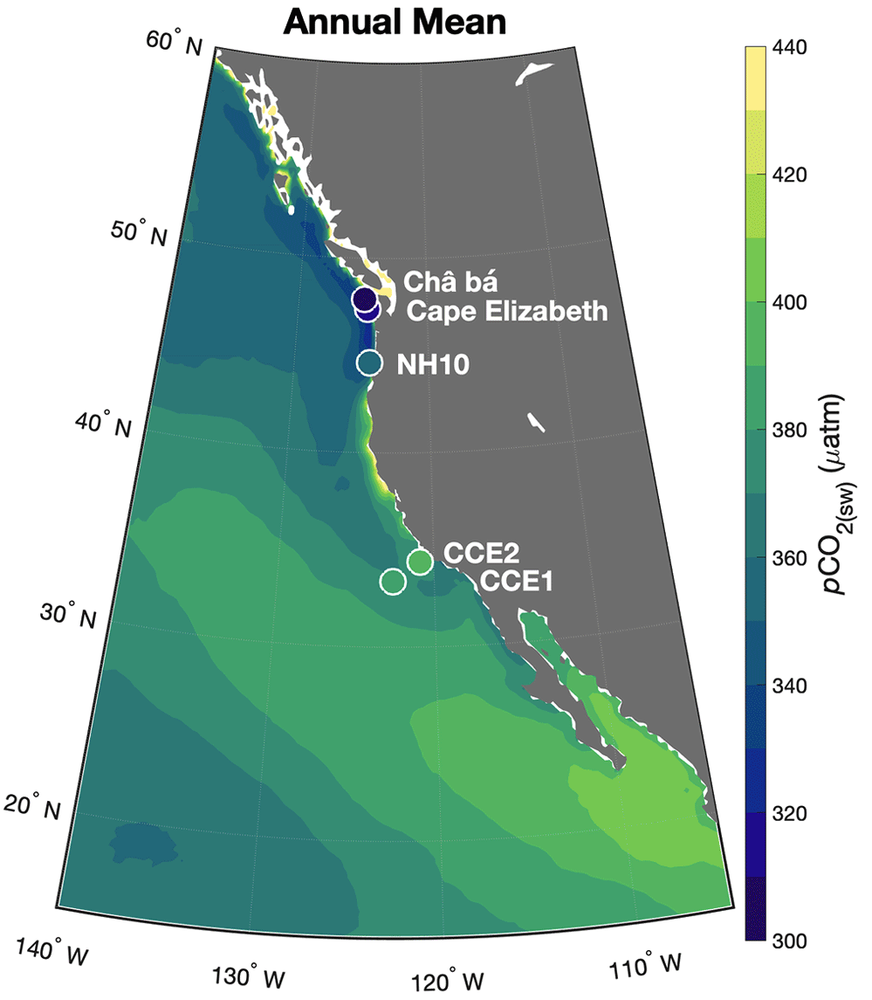
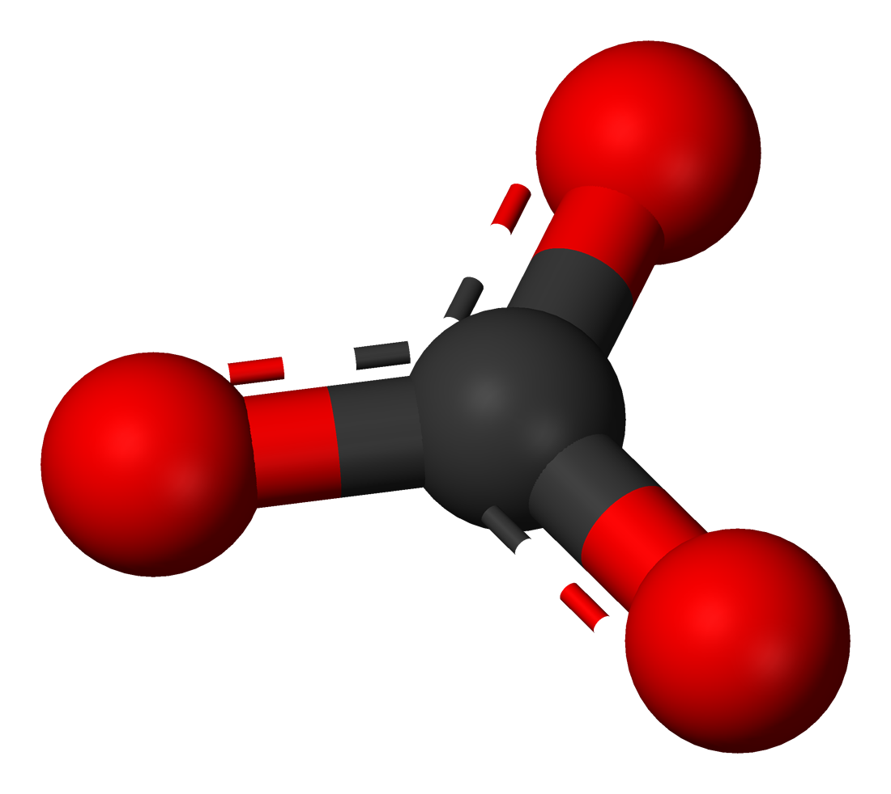
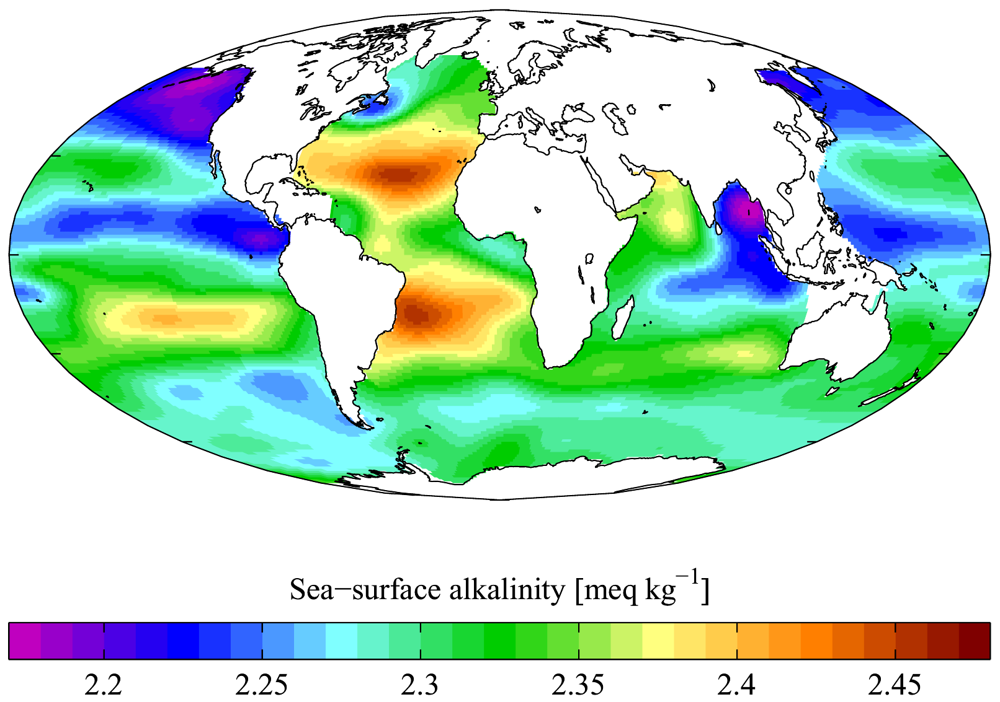
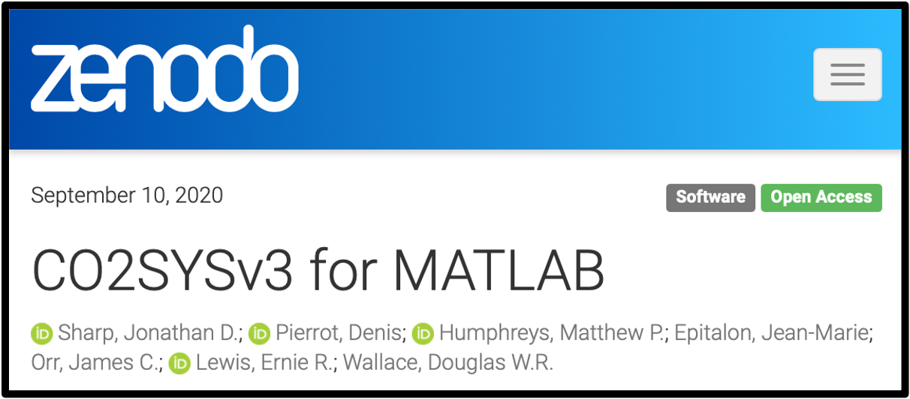

Biogeochemistry of the California Current System
The California Current Large Marine Ecosystem (CCLME) is a dynamic ocean system that supports high biological production, making it an important region globally in the context of ocean carbon cycling. The CCLME is rapidly acidifying compared to the global ocean, due in part to amplification of upwelling-favorable wind stress, and is losing oxygen in subsurface waters, due in part to long-term climate warming.
In some recent work, I used a machine learning technique known as random forest regression with observations of surface ocean carbon to construct a monthly data product of carbon dioxide partial pressure in the CCLME representing all months from January 1998 to December 2020. This data product (RFR-CCS) can be used to validate high-resolution regional models, invetigate the drivers of spatiotemporal CO2 flux variability, and quantify patterns of ocean acidification in the CCLME
 Additional ongoing work in the CCLME involves the use of newly deployed Biogeochemical (BGC) Argo floats, which are uniquely suited to enhance the spatial and temporal resolution of chemical measurements in this region. Measurements of ocean chemistry have historically been made in the region by the CalCOFI program, NOAA Ocean Acidification Program, and other projects. Unlike cruise-based efforts, BGC Argo floats make continuous measurements every few days from 1,000 meters or deeper in the ocean all the way to the surface. The floats drift slowly with subsurface currents, allowing for the monitoring of a variety of ocean processes including the progression of ocean acidification, the expansion of oxygen minimum zones, and the intensity of ocean carbon uptake and export.
Additional ongoing work in the CCLME involves the use of newly deployed Biogeochemical (BGC) Argo floats, which are uniquely suited to enhance the spatial and temporal resolution of chemical measurements in this region. Measurements of ocean chemistry have historically been made in the region by the CalCOFI program, NOAA Ocean Acidification Program, and other projects. Unlike cruise-based efforts, BGC Argo floats make continuous measurements every few days from 1,000 meters or deeper in the ocean all the way to the surface. The floats drift slowly with subsurface currents, allowing for the monitoring of a variety of ocean processes including the progression of ocean acidification, the expansion of oxygen minimum zones, and the intensity of ocean carbon uptake and export.
Observation-Based 4D Data Products
 Recently, I've been interested in using observational data from ship-based surveys and autonomous platforms to study spatiotemporal variability in ocean biogeochemistry. As a first step, I've used a combined dataset of dissolved oxygen observations from hydrographic cruises and BGC Argo floats to train two different types of machine learning models. With these models, I've predicted dissolved oxygen concentrations on gridded fields of predictor variables to construct a four-dimensional monthly data product of global ocean dissolved oxygen over nearly two decades. The data product (GOBAI-O2) can be used to establish regional and global baselines for oxygen, analyze seasonal dynamics in oxygen concentraions, and examine the evolution of hypoxic zones and oxygen inventories over time.
Recently, I've been interested in using observational data from ship-based surveys and autonomous platforms to study spatiotemporal variability in ocean biogeochemistry. As a first step, I've used a combined dataset of dissolved oxygen observations from hydrographic cruises and BGC Argo floats to train two different types of machine learning models. With these models, I've predicted dissolved oxygen concentrations on gridded fields of predictor variables to construct a four-dimensional monthly data product of global ocean dissolved oxygen over nearly two decades. The data product (GOBAI-O2) can be used to establish regional and global baselines for oxygen, analyze seasonal dynamics in oxygen concentraions, and examine the evolution of hypoxic zones and oxygen inventories over time.
Carbonate Ion Measurements
About 50% of carbon dioxide gas emitted by fossil fuel burning remains in the atmosphere and contributes to global warming. Of the remaining 50%, about half dissolves into the ocean and reacts with water to form carbonic acid. This causes ocean acidification, which decreases the amount of carbonate ions in seawater. Carbonate ions are important to marine calcifiers, organisms that create shells and skeletons out of the mineral calcium carbonate. Calcifiers have ecological and economical significance in many parts of the world ocean, including in waters off the coasta of the United States.
The amount or "concentration" of carbonate ions in seawater ([CO32-]) is typically calculated rather than directly measured. However, a method that uses observations of the amount of ultraviolet light absorbed by seawater to make measurements of [CO32-] was described about a decade ago. Building upon this work, part of my PhD research involved developing a correction for instrument-dependent offsets in [CO32-] measurements made using different instruments with this method (Sharp et al., 2017). After this, I extended the method for applicability at temperatures other than 25 °C and evaluated the effect of [CO32-] measurement uncertainty on the calculation of other carbonate system parameters (Sharp and Byrne, 2019).
This carbonate ion measurement technique has the potential to be implemented on automated sensor platforms that are deployed in the ocean to directly measure seawater chemistry. The technique also adds significant value to the ocean chemistry community by providing a fifth parameter that can be measured to resolve the marine carbonate system, in addition to total alkalinity, total dissolved inorganic carbon, the partial pressure of CO2, and pH.
Organic Alkalinity
One of the most important measured parameters for describing the chemistry of natural waters is total alkalinity. Total alkalinity is a measure of the acid neutralizing capacity of a solution, and in seawater it encorporates the influences of a number of different proton acceptors. Those proton acceptors are mainly inorganic ions; however, recent laboratory experiments and data analysis efforts have indicated that dissolved organic molecules can be important contributors to seawater total alkalinity, even in open ocean waters.
During my time as a PhD student, I undertook some modelling and experimental work to investigate the effect of organic proton acceptors on measurements of total alkalinity. One study I conducted used numerical modelling to describe the ways different organic molecules can contribute to alkalinity measured by titration, depending on the method of titration and the chemical nature of the organic molecule in question (Sharp and Byrne, 2020). Another study of mine looked into the possibility that carbonate system measurement standards contain small amounts of organic alkalinity (Sharp and Byrne, 2021).
Updates to CO2SYS
Chemical oceanographers who study the marine carbonate system must often make calculations to determine the speciation of inorganic carbon in seawater. To perform these calculations, complex thermodynamic models are necessary, so multiple computer programs have been developed to make carbonate chemistry calculations faster and easier. One of these programs, CO2SYS, was first written in 1998 using Microsoft QuickBASIC to run with MS-DOS. Over the years, CO2SYS has been converted to Microsoft Visual Basic, MATLAB, and Python. Improvements to its functionality have been gradually made and options for new experimentally-determined chemical constants have been incrementally added.
One of my recent publications prompted me to made some changes to CO2SYS for MATLAB, to allow for calculations using [CO32-] and for the propagation of its uncertainty. These minor changes developed into some more extensive additions to the functionality of CO2SYS, including allowing for inputs of the bicarbonate ion and dissolved CO2, accounting for the contributions of bisulfide and ammonium to alkalinity, additions of new equilibrium constants, and allowing for the propagation of errors in all these new inputs. These updates led to the release of a new version of the program (Sharp et al., 2020). This version of CO2SYS works with MATLAB or GNU Octave.